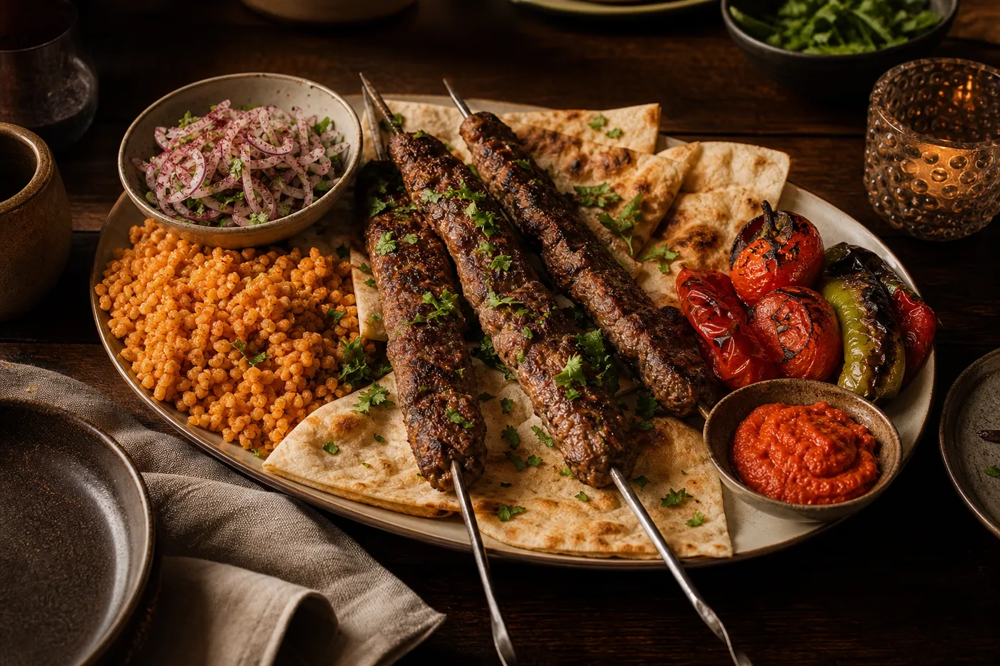

Vol. 01EutherCook
Helgboken
Kebab
Fredag — söndag
Helgkokbok · 3 middagar · 5 personer
Från rökig Adana till citronkyckling och söndagens krispiga döner. En helg där varje middag får sin egen sås och karaktär.
Första utgåvan kan kebab — precis lagom ambitiöst.

Din meny
Tre uttryck av samma idé. Varje recept står på egna ben, men råvarorna hjälper varandra genom helgen.
Allt på en gång
Mängderna följer antalet personer ovan. Kryssa medan du handlar — listan stannar kvar i den här webbläsaren.
“Recepten är byggklossar.
Kokboken är ögonblicket.”
Varje rätt bor i en egen TOML-fil. EutherCook väljer, skalar och binder ihop dem till en bok efter tema, sällskap och tillfälle.